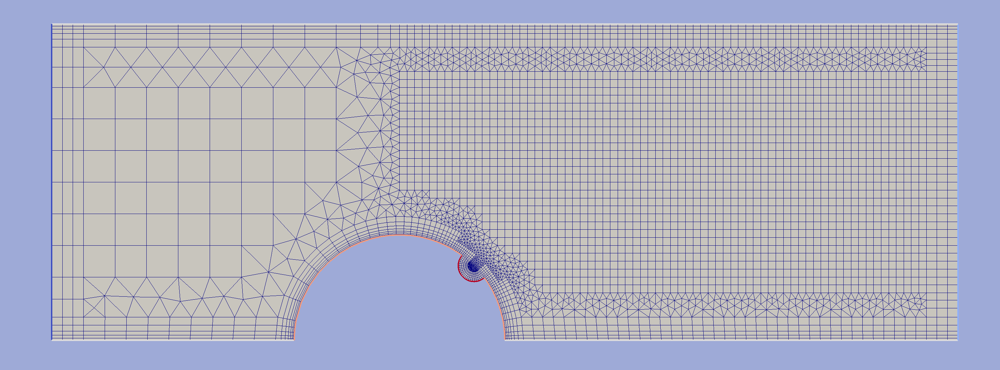

Example 3¶
Building a grid around a half-cylinder with a cut placed on the bottom of the channel.

{kind=link}
fig1. Resulting grid
from hybmeshpack import hmscript as hm
# This script was created for hybmesh 0.2.1.
# If running version of hybmesh is not compatible with this version
# an exception will be raised at this line.
hm.check_compatibility("0.2.1", 2)
# set boundary features as globals for usage in boundary setters.
global binput, boutput, bwalls, bcyl, bcut
# Register boundary types for cylinder, cut, channel boundaries
binput = hm.add_boundary_type(1, "Input")
boutput = hm.add_boundary_type(2, "Output")
bwalls = hm.add_boundary_type(3, "Channel")
bcyl = hm.add_boundary_type(4, "Cylinder")
bcut = hm.add_boundary_type(5, "Cut")
# Build base contours for an obstacle with a cut.
# Here we assign boundary type to obstacle objects
# so they can be transfered to all grids and contours obtained from
# these contours
cont_cyl = hm.add_circ_contour([0, 0], 1, 64, bcyl)
cont_cut = hm.add_circ_contour([0, 1], 0.15, 64, bcut)
hm.rotate_geom(cont_cut, -45)
obstacle = hm.clip_domain(cont_cyl, cont_cut, "difference")
# Build background channel grid so that its downwind part was finer
chg1 = hm.add_unf_rect_grid([-3, 0], [0, 3], 10, 10)
chg2 = hm.add_unf_rect_grid([0, 0], [5, 3], 70, 40)
chang = hm.unite_grids(chg1, [(chg2, 0.5)])
# cut obstacle domain from basic channel grid
channel_wcut = hm.exclude_contours(chang, obstacle, "inner")
# set boundary grid for 'channel_wcut' contour:
# 1) upper side of the channel
bop_upper = hm.BoundaryGridOptions(channel_wcut)
bop_upper.start_point, bop_upper.end_point = [5, 3], [-3, 3]
bop_upper.bnd_stepping = "no"
bop_upper.incremental_partition(0.02, 1.4, 5)
# 2) channel bottom before the obstacle
bop_bot1 = hm.BoundaryGridOptions(channel_wcut)
bop_bot1.start_point, bop_bot1.end_point = [-3, 0], [-1, 0]
bop_bot1.bnd_stepping = "const"
bop_bot1.bnd_step = 0.2
bop_bot1.incremental_partition(0.02, 1.4, 5)
# 3) obstacle before cut area
bop_bot2 = hm.BoundaryGridOptions(channel_wcut)
bop_bot2.start_point, bop_bot2.end_point = [-1, 0], [0.5, 0.87]
bop_bot2.bnd_stepping = "incremental"
bop_bot2.bnd_step = [0.2, 0.02]
bop_bot2.incremental_partition(0.01, 1.3, 7)
# 4) obstacle in the cut area
bop_bot3 = hm.BoundaryGridOptions(channel_wcut)
bop_bot3.start_point, bop_bot3.end_point = [0.5, 0.87], [0.85, 0.5]
bop_bot3.bnd_stepping = "const"
bop_bot3.bnd_step = 0.02
bop_bot3.incremental_partition(0.01, 1.3, 5)
# shut down round angle algorithm
bop_bot3.range_angles[3] = 360
# 5) obstacle after cut area
bop_bot4 = hm.BoundaryGridOptions(channel_wcut)
bop_bot4.start_point, bop_bot4.end_point = [0.85, 0.5], [1, 0]
bop_bot4.bnd_stepping = "incremental"
bop_bot4.bnd_step = [0.02, 0.1]
bop_bot4.incremental_partition(0.01, 1.3, 7)
# 6) channel bottom after obstacle
bop_bot5 = hm.BoundaryGridOptions(channel_wcut)
bop_bot5.start_point, bop_bot5.end_point = [1, 0], [5, 0]
bop_bot5.bnd_stepping = "const"
bop_bot5.bnd_step = 0.1
bop_bot5.incremental_partition(0.02, 1.4, 5)
# Assemble boundary grid
bgrid = hm.build_boundary_grid([
bop_upper, bop_bot1, bop_bot2,
bop_bot3, bop_bot4, bop_bot5,
])
# Make imposition to background mesh
grid_wbnd = hm.unite_grids(channel_wcut, [(bgrid, 0.2)])
# heal grid to get rid of intermediate boundary nodes
# which present in grid because we used "const" boundary stepping
# at some segments
hm.heal_grid(grid_wbnd, simplify_boundary=30)
# as a final step we add boundary grid to input and output segments
# in order to get uniform cells in that area
binp = hm.BoundaryGridOptions(grid_wbnd)
binp.uniform_partition(0.3, 3)
binp.start_point, binp.end_point = [-3, 3], [-3, 0]
binp.bnd_stepping = "no"
binp.direction = "right"
bout = hm.BoundaryGridOptions(grid_wbnd)
bout.uniform_partition(0.3, 3)
bout.start_point, bout.end_point = [5, 0], [5, 3]
bout.bnd_stepping = "no"
bout.direction = "right"
inout_grid = hm.build_boundary_grid([binp, bout])
# and unite it with main grid with buffer=0 because
# all points of common edges coincide as a result of 'no' bnd_stepping
grid_final = hm.unite_grids(grid_wbnd, [(inout_grid, 0)])
# Now we can assign boundary types for channel bounds. Obstacle boundaries
# already presents in the grid as they were inherited from initial contours.
def channelbfun(x0, y0, x1, y1, oldb):
# boundaries for obstacle are already set and we don't want to reset them.
if oldb in [bcyl, bcut]:
return oldb
# bottom/top walls
if abs(y0 - y1) < 1e-12:
return bwalls
# output
if abs(x0 - x1) < 1e-12 and x0 > 0:
return boutput
# input
if abs(x0 - x1) < 1e-12 and x0 < 0:
return binput
hm.set_boundary_type(grid_final, bfun=channelbfun)
# check mesh quality
if hm.skewness(grid_final)['ok']:
print "grid skewness test was successfully passed"
else:
print "!!! grid has bad cells"
# and export the result
hm.export_grid_vtk(grid_final, "g.vtk")
hm.export_contour_vtk(grid_final, "c.vtk")